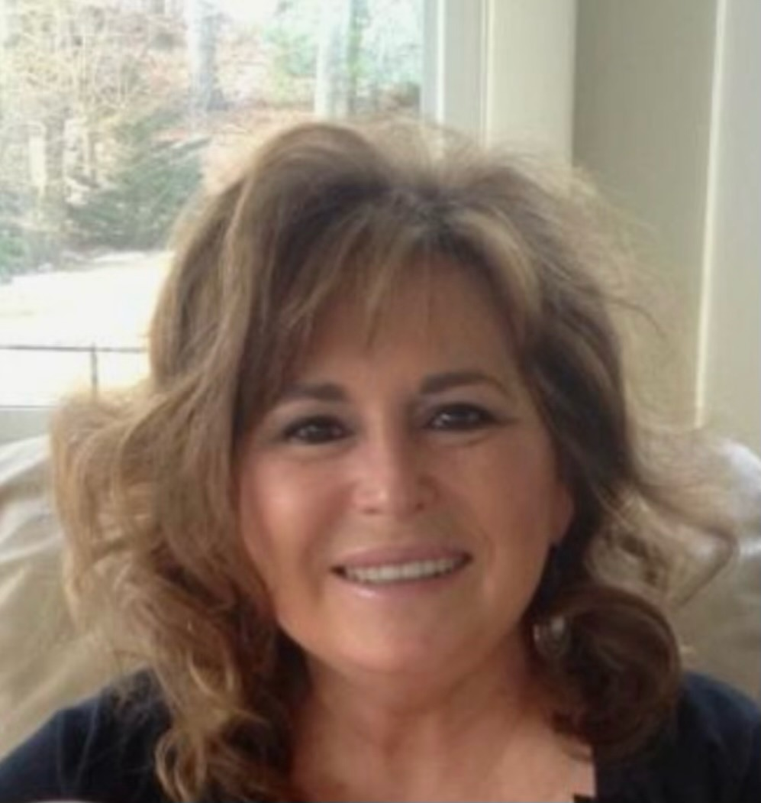

Elizabeth Duncan is the founder of Hummingbird Concierge Nurse Consulting. She graduated from Boston College School of Nursing, and has spent her 28 year career at Massachusetts General Hospital working in acute medical and perioperative nursing units. Over the years, she’s identified strong nurse advocacy and comprehensive patient and family education as key components to successful recovery at home.
Elizabeth strives to honor the dignity of each person by providing compassionate, supportive, personalized care, and meeting the patients where they are. She knows every patient has a story, and holds specific hopes for how their health journey will unfold. Elizabeth’s goal is to provide each patient with the opportunity to share those plans, then act as a guide and advocate to help achieve them, making the necessary adjustments along the way.
At her home, nursing and life are intertwined, and Elizabeth embraced the opportunity to become the primary caregiver for the remarkable women in her family as they aged, and then again as they faced end of life issues. Elizabeth saw rapid improvement in the quality and efficiency of their care once she started coordinating the many services involved, and her mission is to share that expertise with others. This experience became the catalyst for developing Hummingbird Concierge.
Personalized, nurse-guided navigation is the missing ingredient to effective health care coordination. The founding principle of Hummingbird is based on Elizabeth’s mantra - that every family needs a nurse.
Elizabeth lives with her husband, their five children, four chickens, and sweet chocolate lab. Her mother also lives with them, to ensure everyone behaves. This family foundation has been the bedrock of her calling to care for and accompany others on their healthcare journey, embracing joy along the way. She loves finding new ice cream stands with her family, laughing with her sisters, listening to live music, and can recite Ocean's Eleven by heart.
Kimberly Seibert has been a Registered Nurse at Massachusetts General Hospital for more than 25 years. Kim graduated from Curry College with her BSN and a minor in Psychology. Her career has encompassed a variety of nursing roles including general medical/surgical nursing, perioperative areas, and as a clinical instructor for nursing students.
Ten years ago, Kim faced one of the biggest challenges of her life when her father was diagnosed with cancer, quickly followed by her mother’s dementia diagnosis. Kim was able to manage both of these complex diagnoses by utilizing her expert assessment, communication, and patient advocacy skills in order to get her parents the care they needed and remain at home, as they wanted.
Kim has experienced first hand how goals of care can slowly evolve from pursuing an aggressive treatment plan into deciding to take it one day at a time, surrounded by loved ones, treating for comfort only. She knows every path chosen is a very personal decision that deserves unlimited support for the patient and their families.
Recognizing the advantage her professional experience provided her family and the increased efficiency of care it brought, Kim aims to share her navigation savvy with other families facing the same struggles. Kim is undeterred by difficult situations, and always works to find a solution that best meets the goals of the patient.
Kim lives with her husband, two daughters and their quirky yellow lab, Bruce. She loves all things related to the water, as she has found it renews her spirit and brings joy to her life. She can often be seen on long walks with Bruce, where there is usually more chatting and laughing with neighbors than actual exercise.

Cheryl graduated from Somerville Hospital School of Nursing, earned her BSN from Regis College, and completed her MS at Lasell University. With a primary focus on surgical nursing, Cheryl possesses a deep understanding of the education, support, and resources patients need to maintain their health, improve, and recover at home.
Throughout her career, Cheryl has identified numerous barriers to patient care, including a lack of resources, gaps in understanding the healthcare system, and insufficient patient education. She acknowledges that the healthcare system requires improvement to better serve patients and is dedicated to enhancing patient outcomes through compassionate and comprehensive care. Cheryl's commitment to patient care is evident both professionally and personally.
Known for her readiness to assist, whether adjusting crutches for strangers or advising on health concerns, she consistently engages with individuals about their healthcare needs. Her forty-two-year career, including 18 years at Massachusetts General Hospital, reflects her dedication to patient care and comfort.
Outside of work, Cheryl enjoys spending time with her family, including her husband, two daughters, sons-in-law, and five grandchildren. She loves planning and hosting family events, holiday gatherings, and family trips to Maine and Clearwater Beach. Passionate about ancestry, she dreams of connecting with her ancestors from the early 1900s. Cheryl also finds joy in comedy and a good laugh, and she draws inspiration from the ocean and music, which bring harmony to her life.